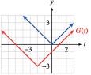

Section 2.7 Chapter Summary and Review
Subsection Key Concepts
We can solve equations of the form \(a(px + q)^2 + r = 0\) by extraction of roots.
The formula for compound interest is \(A = P (1 + r)^n\text{.}\)
Simple nonlinear equations can be solved by undoing the operations on the variable.
The absolute value of \(x\) is defined by
\begin{equation*} \abs{x} = \begin{cases} x \amp \text{if } x\ge 0\\ -x \amp \text{if } x\lt 0 \end{cases} \end{equation*}The absolute value has the following properties:
\(\abs{a + b}\le\abs{a}+\abs{b} \) Triangle inequality \(\abs{ab}=\abs{a}\abs{b} \) Multiplicative property -
Many situations can be modeled by one of eight basic functions:
\(y=x\) \(y=\abs{x} \) \(y=x^2\) \(y=x^3\) \(y=\dfrac{1}{x} \) \(y=\dfrac{1}{x^2} \) \(y=\sqrt{x} \) \(y=\sqrt[3]{x} \) Functions can be defined piecewise, with different formulas on different intervals.
Transformations of Functions.
The graph of \(y = f (x) + k\) is shifted vertically compared to the graph of \(y = f (x)\text{.}\)
The graph of \(y = f (x + h)\) is shifted horizontally compared to the graph of \(y = f (x)\text{.}\)
The graph of \(y = af(x)\) is stretched or compressed vertically compared to the graph of y = f (x).
The graph of \(y=-f (x)\) is reflected about the \(x\)-axis compared to the graph of \(y = f (x)\text{.}\)
A nonlinear graph may be concave up or concave down. If a graph is concave up, its slope is increasing. If it is concave down, its slope is decreasing.
The absolute value is used to model distance: The distance between two points \(x\) and \(a\) is given by \(\abs{x - a}\text{.}\)
Absolute Value Equations and Inequalities.
-
The equation \(\abs{ax + b} = c ~~(c \gt 0)\) is equivalent to
\begin{equation*} ax + b = c \text{ or } ax + b =-c \end{equation*} If the solutions of the equation \(\abs{ax + b} = c\) are \(r\) and \(s\text{,}\) with \(r\lt s\text{,}\) then the solutions of \(\abs{ax + b}\lt c\) are \(r\lt x\lt s\text{.}\)
If the solutions of the equation \(\abs{ax + b} = c\) are \(r\) and \(s\text{,}\) with \(r\lt s\text{,}\) then the solutions of \(\abs{ax + b}\gt c\) are \(x\lt r\) or \(x\gt s\text{.}\)
-
We can use absolute value notation to express error tolerances in measurements.
The domain of a function is the set of permissible values for the input variable. The range is the set of function values (that is, values of the output variable) that correspond to the domain values.
A relationship between two variables is a function if each element of the domain is paired with only one element of the range.
We can identify the domain and range of a function from its graph. The domain is the set of input values of all points on the graph, and the range is the set of output values.
If the domain of a function is not given as part of its definition, we assume that the domain is as large as possible. In many applications, however, we may restrict the domain and range of a function to suit the situation at hand.
Exercises Chapter 2 Review Problems
Exercise Group.
For Problems 1-4, solve by extraction of roots.
Exercise Group.
For problems 5-6, solve the formula for the specified variable.
5.
\(A = P(1 + r )^2\) , for \(r\)
\(r = -1 \pm \sqrt{\dfrac{A}{P}}\)
6.
\(V = \dfrac{4}{3}\pi r^3\text{,}\) for \(r\)
7.
Lewis invested $\(2000\) in an account that compounds interest annually. He made no deposits or withdrawals after that. Two years later, he closed the account, withdrawing $\(2464.20\text{.}\) What interest rate did Lewis earn?
\(11\%\)
8.
Earl borrowed $\(5500\) from his uncle for two years with interest compounded annually. At the end of two years, he owed his uncle $\(6474.74\text{.}\) What was the interest rate on the loan?
Exercise Group.
For Problems 9-14, solve.
Exercise Group.
For Problems 15-16, use the Pythagorean theorem to write and solve an equation.
15.
A widescreen television measures \(96\) cm by \(54\) cm. How long is the diagonal?
\(\sqrt{12,132}\approx 110\) cm
16.
A \(15\)-foot ladder leans to the top of a \(12\)-foot fence. How far is the foot of the ladder from the base of the fence?
Exercise Group.
For Problems 17-20, simplify.
Exercise Group.
For Problems 21-24, use the graph to solve the equation or inequality.
21.
Refer to the graph of \(y = \abs{\dfrac{x}{2}-1}\)

Solve \(\abs{\dfrac{x}{2}-1}=2\)
Solve \(\abs{\dfrac{x}{2}-1}\lt 2\)
Solve \(\abs{\dfrac{x}{2}-1}\ge 2\)
\(x = -2\) or \(x = 6\)
\(\displaystyle (-2, 6)\)
\(\displaystyle (-\infty,-2] \cup [6,+\infty)\)
22.
Refer to the graph of \(y = \dfrac{-x^2}{2}+x+1\)
Solve \(\dfrac{-x^2}{2}+x+1=-3\)
Solve \(\dfrac{-x^2}{2}+x+1\ge -3\)
Solve \(\dfrac{-x^2}{2}+x+1\le -3\)
23.
Refer to the graph of \(y = \dfrac{6}{x^2-3x+3}\)

Solve \(2=\dfrac{6}{x^2-3x+3}\)
Solve \(2\gt\dfrac{6}{x^2-3x+3}\)
Solve \(2\lt\dfrac{6}{x^2-3x+3}\)
\(x = 0\) or \(x = 3\)
\(\displaystyle (-\infty,0) \cup (3,\infty)\)
\(\displaystyle (0, 3)\)
24.
Refer to the graph of \(y = \abs{x^3 + 3x^2 + 3x +1}\)

Solve \(8=\abs{x^3 + 3x^2 + 3x +1}\)
Solve \(8\gt\abs{x^3 + 3x^2 + 3x +1}\)
Solve \(8\lt\abs{x^3 + 3x^2 + 3x +1}\)
Exercise Group.
For Problems 25-30, graph the piecewise defined function.
25.
\(f(x) = \begin{cases} x+1 \amp \text{if } x\le 0\\ x^2 \amp \text{if } x\gt 0 \end{cases}\)

26.
\(g(x) = \begin{cases} x-1 \amp \text{if } x\le 1\\ x^3 \amp \text{if } x\gt 1 \end{cases}\)
27.
\(H(x) = \begin{cases} x^2 \amp \text{if } x\le 0\\ \sqrt{x} \amp \text{if } x\gt 0 \end{cases}\)

28.
\(F(x) = \begin{cases} \abs{x} \amp \text{if } x\le 0\\ \dfrac{1}{x} \amp \text{if } x\gt 0 \end{cases}\)
29.
\(S(x) = \begin{cases} x^3 \amp \text{if } x\le 1\\ \abs{x} \amp \text{if } x\gt 1 \end{cases}\)

30.
\(T(x) = \begin{cases} \dfrac{1}{x^2} \amp \text{if } x\lt 0\\ \sqrt{x} \amp \text{if } x\ge 0 \end{cases}\)
Exercise Group.
For Problems 31–38,
Describe each function as transformation of a basic function.
Sketch a graph of the basic function and the given function on the same axes.
31.
\(g(x) = \abs{x} + 2\)
\(y =\abs{x}\) shifted up \(2\) units

32.
\(F(t) = \dfrac{1}{t}- 2\)
33.
\(f (s) =\sqrt{s} + 3\)
\(y =\sqrt{x}\) shifted up \(3\) units

34.
\(g(u) =\sqrt{u + 2} - 3\)
35.
\(G(t) = \abs{t + 2} - 3\)
\(y =\abs{x}\) shifted left \(2\) units and down \(3\) units
- 
36.
\(H(t) = \dfrac{1}{(t - 2)^2}+ 3\)
37.
\(h(s) = -2\sqrt{s} \)
\(y =\sqrt{x}\) reflected across the horizontal axis and stretched vertically by a factor of \(2\)

38.
\(H(t) = \dfrac{1}{ 2}\abs{s} \)
Exercise Group.
In Problems 39–42, write a formula for each transformation of the given function.
39.

\(\displaystyle y =\dfrac{-3}{2}f (t)\)
\(\displaystyle y =\dfrac{-3}{2}f (t)+3\)
\(\displaystyle y =\dfrac{-3}{2}f (t+2)+3\)
40.

41.
| \(t\) | \(0\) | \(1\) | \(2\) | \(3\) | \(4\) | \(5\) |
| \(f(t)\) | \(243\) | \(81\) | \(27\) | \(9\) | \(3\) | \(1\) |
\(t\) \(1\) \(2\) \(3\) \(4\) \(5\) \(6\) \(y\) \(243\) \(81\) \(27\) \(9\) \(3\) \(1\) \(t\) \(1\) \(2\) \(3\) \(4\) \(5\) \(6\) \(y\) \(-243\) \(-81\) \(-27\) \(-9\) \(-3\) \(-1\) \(t\) \(1\) \(2\) \(3\) \(4\) \(5\) \(6\) \(y\) \(57\) \(219\) \(273\) \(291\) \(297\) \(299\)
\(\displaystyle y = f (t - 1)\)
\(\displaystyle y = -f (t - 1)\)
\(\displaystyle y = -f (t - 1)+300\)
42.
| \(x\) | \(1\) | \(2\) | \(3\) | \(4\) | \(5\) | \(6\) |
| \(f(x)\) | \(25\) | \(24\) | \(21\) | \(16\) | \(9\) | \(0\) |
\(x\) \(-1\) \(0\) \(1\) \(2\) \(3\) \(4\) \(y\) \(25\) \(24\) \(21\) \(16\) \(9\) \(0\) \(x\) \(-1\) \(0\) \(1\) \(2\) \(3\) \(4\) \(y\) \(50\) \(48\) \(42\) \(32\) \(18\) \(0\) \(x\) \(-1\) \(0\) \(1\) \(2\) \(3\) \(4\) \(y\) \(70\) \(68\) \(62\) \(52\) \(38\) \(20\)
Exercise Group.
For Problems 43-44, give an equation for the function graphed.
43.

\(y = (x - 2)^2 - 4\)
44.

Exercise Group.
Sketch graphs to illustrate the situations in Problems 45 and 46.
45.
Inga runs hot water into the bathtub until it is about half full. Because the water is too hot, she lets it sit for a while before getting into the tub. After several minutes of bathing, she gets out and drains the tub. Graph the water level in the bathtub as a function of time, from the moment Inga starts filling the tub until it is drained.

46.
David turns on the oven and it heats up steadily until the proper baking temperature is reached. The oven maintains that temperature during the time David bakes a pot roast. When he turns the oven off, David leaves the oven door open for a few minutes, and the temperature drops fairly rapidly during that time. After David closes the door, the temperature continues to drop, but at a much slower rate. Graph the temperature of the oven as a function of time, from the moment David first turns on the oven until shortly after David closes the door when the oven is cooling.
Exercise Group.
For Problems 47-48, match each table with its graph.
47.
\(x\) \(0\) \(2\) \(4\) \(6\) \(8\) \(y\) \(10\) \(14\) \(21\) \(30\) \(43\) \(x\) \(0\) \(10\) \(20\) \(30\) \(40\) \(y\) \(20\) \(52\) \(65\) \(75\) \(83\) \(x\) \(0\) \(1\) \(2\) \(3\) \(4\) \(y\) \(140\) \(190\) \(240\) \(290\) \(340\)

I (c), II (b), III (a)
48.
\(x\) \(0\) \(0.1\) \(0.2\) \(0.3\) \(0.4\) \(y\) \(100\) \(95\) \(80\) \(55\) \(20\) \(x\) \(0\) \(1\) \(2\) \(3\) \(4\) \(y\) \(8.5\) \(7.1\) \(5.7\) \(4.3\) \(2.9\) \(x\) \(0\) \(10\) \(20\) \(30\) \(40\) \(y\) \(50\) \(37\) \(27\) \(20\) \(15\)

Exercise Group.
Write and graph a piecewise function for Problems 49 and 50.
49.
The fluid level in a tank is a function of the number of days since the year began. The level was initially at \(60\) inches and rose an inch a day for \(10\) days, remained constant for the next \(20\) days, then dropped a half-inch each day for \(30\) days.
\(g(t) = \begin{cases} 60+t, \amp 0\le t \lt 10\\ 70, \amp 10\le t \lt 30\\ 70 - \frac{1}{2}(t - 30), \amp 30\le t \le 60 \end{cases}\)

50.
The temperature at different locations in a large room is a function of distance from the window. Within \(2\) feet of the window, the temperature is \(66\degree\) Fahrenheit, but the temperature rises by \(0.5\degree\) for each of the next \(10\) feet, then maintains the temperature at \(12\) feet for the rest of the room.
Exercise Group.
For Problems 51-54, use absolute value notation to write the expression as an equation or inequality.
Exercise Group.
For Problems 55-64, solve.
55.
\(\abs{9 - 5t} = 3\)
\(t = \dfrac{6}{5}\) or \(t = \dfrac{12}{5}\)
56.
\(1=\abs{4q-7} \)
57.
\(-29=\abs{2w + 3}\)
No solutions
58.
\(\abs{\dfrac{8n+3}{5}}=-11 \)
59.
\(1=\abs{\dfrac{7-2p}{5}}\)
\(p = 1\) or \(p = 6\)
60.
\(\abs{6(r-10)}=30 \)
61.
\(\abs{3x-2}\lt 4\)
\(\left(\dfrac{-2}{3}, 2\right)\)
62.
\(\abs{2x + 0.3}\le 0.5 \)
63.
\(\abs{3y + 1.2}\ge 1.5\)
\((-\infty,-0.9] \cup [0.1,\infty)\)
64.
\(\abs{3z+\dfrac{1}{2}}\gt \dfrac{1}{3} \)
Exercise Group.
For Problems 65-66, express the error tolerance using absolute value.
65.
The height, \(H\text{,}\) of a female trainee must be between \(56\) inches and \(75\) inches.
\(\abs{H - 65.5}\lt 9.5\)
66.
The time, \(t\text{,}\) in freefall must be at least \(3.5\) seconds but no more than \(8.1\) seconds.
Exercise Group.
For Problems 67-68, give an interval of possible values for the measurement.
67.
The mass, \(M\text{,}\) of the sample must satisfy \(\abs{M - 2.1}\le 0.05\text{.}\)
\([2.05, 2.15]\)
68.
The temperature, \(T\text{,}\) of the refrigerator is specified by \(\abs{T - 4.0}\lt 0.5\text{.}\)
Exercise Group.
In Problems 69 and 70,
Plot the points and sketch a smooth curve through them.
Use your graph to help you discover the equation that describes the function.
69.
| \(x\) | \(g(x)\) |
| \(2\) | \(12\) |
| \(3\) | \(8\) |
| \(4\) | \(6\) |
| \(6\) | \(4\) |
| \(8\) | \(3\) |
| \(12\) | \(2\) |

\(\displaystyle g(x)=\dfrac{24}{x} \)
70.
| \(x\) | \(F(x)\) |
| \(-2\) | \(8\) |
| \(-1\) | \(1\) |
| \(0\) | \(0\) |
| \(1\) | \(-1\) |
| \(2\) | \(-8\) |
| \(3\) | \(-27\) |
Exercise Group.
In Problems 71–76,
Use the graph to complete the table of values.
By finding a pattern in the table of values, write an equation for the graph.
71.

| \(x\) | \(0\) | \(4\) | \(8\) | \(\hphantom{000}\) | \(16\) | \(\hphantom{000}\) |
| \(y\) | \(\hphantom{000}\) | \(\hphantom{000}\) | \(\hphantom{000}\) | \(10\) | \(\hphantom{000}\) | \(2\) |
\(x\) \(0\) \(4\) \(8\) \(14\) \(16\) \(22\) \(y\) \(24\) \(20\) \(16\) \(10\) \(8\) \(2\) \(\displaystyle y = 24 - x\)
72.

| \(x\) | \(0\) | \(4\) | \(10\) | \(\hphantom{000}\) | \(14\) | \(\hphantom{000}\) |
| \(y\) | \(\hphantom{000}\) | \(\hphantom{000}\) | \(\hphantom{000}\) | \(18\) | \(\hphantom{000}\) | \(24\) |
73.

| \(x\) | \(0\) | \(\hphantom{000}\) | \(4\) | \(\hphantom{000}\) | \(16\) | \(25\) |
| \(y\) | \(\hphantom{000}\) | \(1\) | \(\hphantom{000}\) | \(3\) | \(\hphantom{000}\) | \(\hphantom{000}\) |
\(x\) \(0\) \(1\) \(4\) \(9\) \(16\) \(25\) \(y\) \(0\) \(1\) \(2\) \(3\) \(4\) \(5\) \(\displaystyle y = \sqrt{x} \)
74.

| \(x\) | \(\hphantom{000}\) | \(0.5\) | \(1\) | \(1.5\) | \(\hphantom{000}\) | \(4\) |
| \(y\) | \(4\) | \(\hphantom{000}\) | \(\hphantom{000}\) | \(\hphantom{000}\) | \(0.5\) | \(\hphantom{000}\) |
75.

| \(x\) | \(-3\) | \(-2\) | \(\hphantom{000}\) | \(0\) | \(1\) | \(2\) |
| \(y\) | \(\hphantom{000}\) | \(\hphantom{000}\) | \(-3\) | \(\hphantom{000}\) | \(\hphantom{000}\) | \(\hphantom{000}\) |
\(x\) \(-3\) \(-2\) \(-1\) \(0\) \(1\) \(2\) \(y\) \(5\) \(0\) \(-3\) \(-4\) \(-3\) \(0\) \(\displaystyle y = x^2-4 \)
76.

| \(x\) | \(-3\) | \(-2\) | \(\hphantom{000}\) | \(0\) | \(1\) | \(\hphantom{000}\) |
| \(y\) | \(\hphantom{000}\) | \(\hphantom{000}\) | \(8\) | \(\hphantom{000}\) | \(\hphantom{000}\) | \(-7\) |
Exercise Group.
For Problems 77-80, use a graphing calculator to graph the function on the given domain. Adjust Ymin and Ymax until you can determine the range of the function using the TRACE key. Then verify your answer algebraically by evaluating the function. State the domain and corresponding range in interval notation.
77.
\(f(t)=-t^2+3t\text{;}\) \(~~-2\le t\le 4\)
Domain: \([-2, 4]\text{;}\) Range: \([-10, -4]\)
78.
\(g(x)=\sqrt{s-2} \text{;}\) \(~~2\le s\le 6\)
79.
\(F(x)=\dfrac{1}{x+2} \text{;}\) \(~~-2\lt x\le 4\)
Domain: \((-2, 4]\text{;}\) Range: \(\left[\dfrac{1}{6} , \infty\right)\)
80.
\(H(x)=\dfrac{1}{2-x} \text{;}\) \(~~-4\le x\lt 2\)